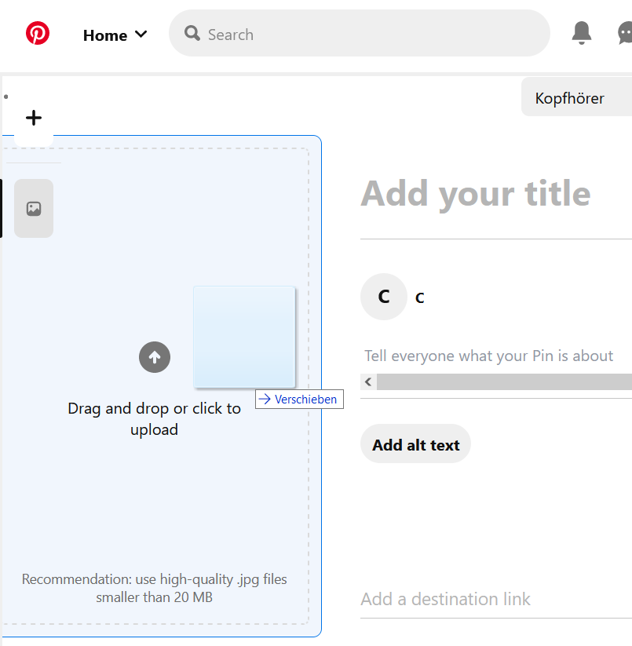

Usability Assessment
The usability assessment will encompass 7 of Jakob Nielsen’s 10 heuristics and describe one strength and one weakness per heuristic.
Visibility of System Status
Strength
The length of a video is represented with a white bar filling up at the top of the video, which consistently communicates the length of the video and how far through the video the user is. This prevents confusion about how long it will take to watch a video to the end, and enables the viewer to make informed decisions of what they miss when clicking out of the video.

Weakness
Upon clicking on the inbox feature, Pinterest does not explicitly communicate when their friend list is empty. Pinterest only offers Accounts under “suggested,” which may imply to some users that they need to add friends first. However, new users who have not yet added any friends may benefit from being explicitly informed about the fact that the friend list is empty, since that system status is not intuitively apparent.

System and Real-World Match
Strength
Pinterest employs a comprehensive icon design for its inbox: The speech bubble. Originally stemming from comics, speech bubbles are a simple and effective way of denoting user-to-user communication.

Weakness
The Microcopy of the “Home” section does not match its content as clearly as it could. “Home” could be read as the user profile i.e., the metaphorical “home” of the user on the website. Instead, it is used for the main content feed.

User Control and Freedom
Strength
Pinterest allows for a very high level of freedom for curating the content of the main feed. Users can remove any content they interacted with from the algorithm that generates the home feed content. This includes previously added topics, pin boards, saved pins, and even pins that the user had clicked on during the session.

Weakness
The Microcopy of the “Home” section does not match its content as clearly as it could. “Home” could be read as the user profile i.e., the metaphorical “home” of the user on the website. Instead, it is used for the main content feed.

Consistency and Standards
Strength
A classic example of a quick and effective workflow that Pinterest shares with other systems is the drag and drop function for uploading pins from the user’s hard drive. As a result, users that are used to this function can intuitively work with how it is implemented in the website.
Weakness
When chatting with other users, Pinterest offers a heart button next to the text box. By pressing the button, Pinterest sends a large heart emoji into the text chat. This is inconsistent with how other websites use such a button, where a heart button is often used to “like” a text instead of sending a heart text emoji.

Flexibility and Efficiency of Use
Strength
Pinterest allows users who are also developers to create Widgets to embed on other websites, Pinterest provides a handy preview of how it will look. And when creating the Widget, Pinterest provides a customization for the layout. This allows users who would like to share a pin, a board, or their profile with a fast and flexible of embedding Pinterest content on other websites.

Weakness
While adding a pin to a board is a fast action, it is cumbersome to add the same pin to another board, since the button used to add transforms into an undo button. And, Pinterest does not offer an accessible alternative to add the same pin to another pin board. This is an impediment to the flow of the website and presents a major shortcoming in terms of flexibility.

Aesthetic and Minimalist Design
Strength
Pinterest’s layout is one of the minimalistic interfaces the social media world has to offer. The website uses a very readable black-white-red color scheme, has no side bars, and keeps most of it’s functionality stored in extendable lists. The actual pins make up the vast majority of the interface area, which makes the visual design focused and appealing.

Weakness
The only weak part of design is found in the "Updates" bar. Upon first look, it is hard to distinguish the different types of notifications given to the user, and more important updates are spread far and between generic content recommendations. And, the pictures shown in the list distract from the actual message of the notification. Overall, this area of the website is amongst the least comprehensive visually.

Help Users Recognize, Diagnose and Recover from Errors
Strength
If a user makes a slip and adds a pin to the wrong board, Pinterest offers a quick recovery by turning the button used to add the pin into a button to remove it. Also, by clicking on the pin, the user can also change the board it has been added to after the fact.

Weakness
The same is not possible for the website’s chat function. Once a message is sent to another user, it cannot be edited or deleted. Hence, if a message is mistakenly sent to the wrong user, or contains an error, this error cannot be recovered from.